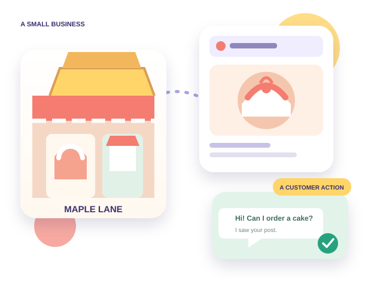

Understand
Read a short explanation in simple English. New words are explained when you meet them.
A FRIENDLY PLACE TO START FROM ZERO
Learn one small idea at a time. See how it works in a familiar business. Then try it yourself — without feeling lost.
✓ No experience needed✓ Learn on your phone✓ Go at your own pace

A simple example. A real skill.NO JARGON. NO RUSH.
You do not need to understand everything today. Just follow one idea from beginning to practice.
Read a short explanation in simple English. New words are explained when you meet them.
Watch the idea happen in a familiar small-business situation, step by step.
Answer one useful question or complete a small task. Learn from mistakes without pressure.
LEARN THROUGH A FAMILIAR STORY
Imagine a home baker who wants more people nearby to discover her cakes. We use this fictional bakery to explain marketing ideas in a way that feels real and easy to follow.
Maple Lane is a made-up practice example. It is not a real client or a claim about business results.
See the first lessonOne simple story can help us understand audience, content, communication and customer action.
CHOOSE ONE NEXT STEP
Start with the basics. You can explore the other areas when you feel ready.
Begin with the first module. Learn what marketing means before moving to tools and techniques.
Start Module 01 → WHEN YOU ARE READY TO APPLYExplore guided practice projects. Each one is a fictional learning exercise, not client work.
Explore projects →YOUR FIRST STEP IS ENOUGH
Take one lesson today. Come back for the next one when you are ready.